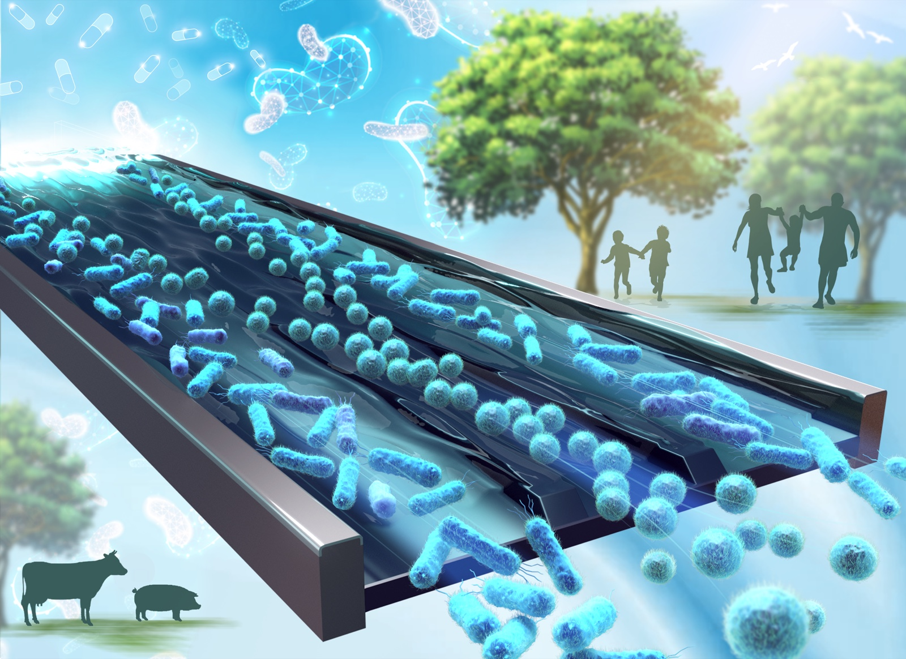

01
Cell sorting
Cell populations are inherently heterogeneous. We develop high-throughput microfluidic platforms for label-free cell sorting, enabling efficient cell isolation and analysis.
Developing integrated systems to manipulate cells, particles, and microenvironments for precision medicine.

Cell populations are inherently heterogeneous. We develop high-throughput microfluidic platforms for label-free cell sorting, enabling efficient cell isolation and analysis.
Cell diversity demands rapid, precise measurements. We develop microfluidic separation and imaging platforms to examine large cell populations at high throughput.
Reliable drug screening requires well-controlled experimental conditions. We combine 3D cell culture, on-chip gradients and biosensors to assess drug treatment responses reproducibly under defined microenvironments.